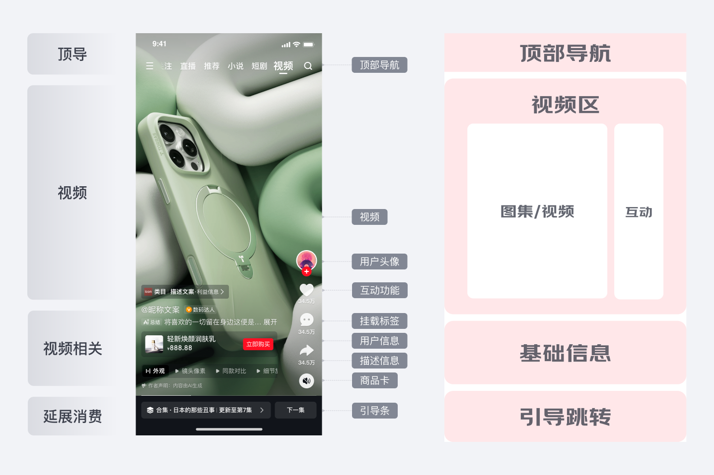
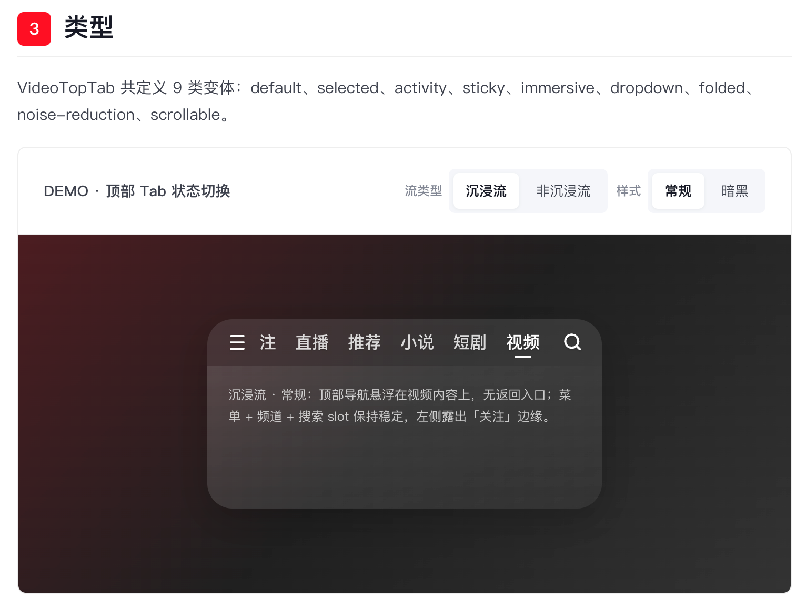
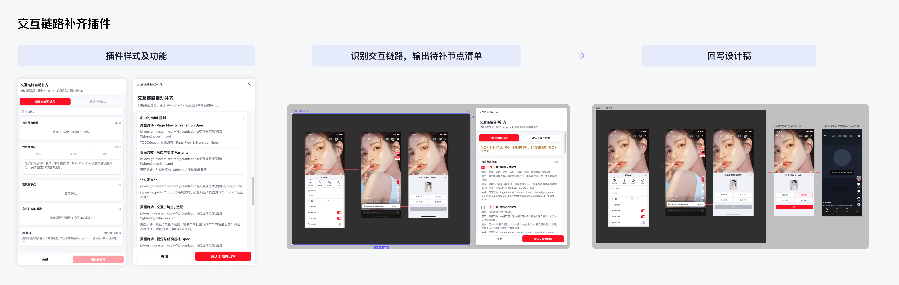

逛频道 / 16.0设计规范
01

Visual nodes · Auto layout · Component instances
实习转正答辩 · JD Design Wiki
以真实业务验证 Design Wiki 的可用性：跑通从设计意图到可运行交付的闭环，并将验证方法沉淀为可复用的团队流程。

Visual nodes · Auto layout · Component instances
Tokens · Structure · Variants · Behaviors

Preview · Specification · Reusable assets
01/先给结论
围绕内容场域与京东 16.0 规范升级，我解决了“设计知识分散、AI 难以准确调用、生成结果缺少验证”的问题，完成从组件知识结构化到页面交付验证的完整闭环。这套方法的价值，不只是完成一个页面，而是把个人判断沉淀为团队和 AI 都能复用的工作方式。
从基础设计变量出发，完成 Token → 组件 → 页面的逐层沉淀与验证。
Token → Component → Page让 Relay 中的视觉结构被准确转译为 AI 和工程均可读取的设计文档。
Relay → Design.md在复杂业务场景中发现 Skill 的结构、语义与还原问题，并推动迭代。
Test → Feedback → Iterate将个人验证过程转化为清晰、稳定、可交接的团队复用方法。
Practice → SOP → Scale02/为什么做
团队方向 × 个人切入点
京东 Design Wiki 正在将传统组件规范转化为 AI 可以读取、检索和调用的设计基建。
我负责视频场域组件知识的结构化，并进一步探索这些知识如何进入真实设计任务，而不只停留在文档沉淀和页面还原。
内容场域存在大量结构相似、状态复杂、跨场景复用的组件，同时迎来京东 16.0 规范升级，需要集中梳理和统一。
传统组件规范分散在设计稿与经验中，AI 难以准确理解和调用。通过沉淀 Design Wiki，将其转化为可检索、可复用的设计知识，支撑组件生成、规范检查与页面搭建。
03/怎么解决
建立清晰的分层思维，让知识从底层规则逐步向上组合。下层决定上层：先有 Token，再形成 Visual，继而构成 Component，最终由组件编排出 Page。
调用并编排组件，不重复描述组件规则
pages/*.md定义结构、变体、状态与交互
components/*.md图标、蒙层、文字等最小视觉能力
visuals/*.md颜色、字体、间距等全局基础规则
tokens/*.md跟随组件管理，避免污染全局资产库
assets/每一层只描述自己该负责的内容。
前面的规则越准确，AI 在页面层需要理解和猜测的内容就越少。04/如何验证
逛频道具备足够复杂度，适合作为验证已有 Skill 可用性的首个真实场景。先识别页面结构，再逐层判断哪些规则应该进入全局规范、哪些能力应该沉淀为可复用组件。

只描述页面区块顺序与组件编排关系
组织具备独立业务语义的内容区块
沉淀可组合的最小视觉能力
统一所有上层结构依赖的基础规则
跨页面重复出现 → 进入组件库
仅服务当前场景 → 作为模块或私有 Assets 管理
Relay MCP 读取结构、token、组件层级。
预检层级、组件边界与缺失信息。
按组件边界生成结构化文档包。
用文档还原页面，检验规范可执行性。
修正规则并回写，进入 Design Wiki 复用。
05/如何沉淀
描述从 Relay 设计稿中抽取出来的设计事实，包括页面结构、模块层级、布局关系、设计 token、组件组成和视觉语义。
用来回答：设计稿里到底有什么？把设计信息转译成开发可执行的实现规范，明确尺寸、间距、颜色、字体、组件规则和页面还原要求。
用来回答：开发应该如何实现？记录组件或页面的交互行为，例如 hover、click、loading、empty、error、disabled 等状态下的响应方式。
用来回答：用户操作后会发生什么？沉淀组件或模块的不同形态与状态变体，帮助后续复用、扩展和对齐多场景下的视觉差异。
用来回答：这个组件有哪些版本？提供给 AI 或自动化流程读取的结构化 schema，用字段化方式描述组件、token、模块和校验规则。
用来回答：机器如何稳定理解这份设计？集中管理从设计稿导出的图片、图标、截图和其他静态资源，保证 HTML 预览与实现过程有可追溯的素材来源。
用来回答：图片和图标资源在哪里？记录每轮生成、人工修正、验证反馈和结构调整，让设计文档的演进过程可以被复盘和追踪。
用来回答：这份文档经历了哪些变化？06/如何迭代
在多个内容场域组件上反复运行、验证，将 Skill 流程中异常情况收敛为可复现问题，并协同正职同学分析原因、推动 Skill 优化。
问题一

问题二

Contribution
基于真实业务组件，连续验证 token、组件、页面到 HTML 预览的完整流程。
通过多个真实组件测试，暴露并反馈 Skill 在结构、规范、资源和页面还原上的问题，推动已有能力进一步优化。
从第一次使用者视角出发的完整上手指南
基于多轮实践，输出《将 Relay 设计稿转 Design.md 的标准化流程》文档，帮助设计同学快速上手，降低团队使用门槛，并参与内部 C2 宣讲和设计同学答疑。
在组件整理过程中，我发现间距标注存在大量重复劳动。不同标注对象的颜色、优先级和伸缩行为都需要设计师反复判断与设置。
我将这些判断规则沉淀为标注 Skill，让 AI 自动识别对象关系并完成一致的规范标注。
已定稿的原子组件仍需要经过命名、属性配置、变体组织与层级整理，才能成为结构稳定、可复用的正式组件。
该 Skill 支持大模型自动阅读原子组件稿件，并按照机器可理解的组件范式完成封装。
这是组件 Markdown 沉淀的最终目的之一：让 AI 不只是理解组件，还能在真实需求中正确调用组件。
我从最小范围开始验证：向 AI 输入 PRD，让它结合已有组件文档与 Skill，识别需求结构、匹配组件并编排为设计稿。


研发看设计稿，不只是看界面，更是要看清页面之间如何流转、点击边界在哪里、不同状态下的反馈是什么。插件基于 Design Wiki 的 16.0 规范，帮助设计师检查并补齐 Relay 设计稿中缺失的交互链路和状态节点。
后续替换为插件截图
08 / 真实交付
目前 Design Wiki 已经完成了"静态资产化"，还没有完成"能力产品化"。在此流程中，输入不只是 prompt，而是业务目标、产品语境、设计规则和组件能力；输出也不只是一个页面，而是可以被讨论、被验收、被迭代的设计结果。
首次基于 16.0 Design System
02 / Validation Goals
设计师能否进入真实工程，与研发共同面向代码交付。
FROM HAND-OFF TO CO-DELIVERY组件、Token、状态和交互规则能否被 AI 正确调用，并约束代码结果。
FROM DOCUMENT TO CONSTRAINT设计意图能否被理解、拆解，并经过生成、链路补齐、检查与合并，最终形成可交付结果。
FROM INTENT TO DELIVERY03 / Core Practice
验证设计意图能否被 AI 理解和拆解，并通过调用 Design Wiki 完成页面生成与交互链路补齐，最终产出符合规范、可编辑、可复用的交付结果。
04 / Core Practice
这一步验证的不只是 AI 能否读取 Design.md，而是规范能否真正约束生成结果，推动设计系统从查阅文档转变为代码生成的约束，并尝试跳过完整设计稿还原环节。

但仅让 AI 读取 design.md 并不足以保证正确生成，还需要两项能力共同配合。
保证 AI 获得完整的页面状态和交互意图。
将组件、Token、变体和行为规则转化为生成过程中的明确边界。
05 / Core Practice
重新界定产品、设计、研发与 AI 的协作方式，让设计意图不再经历反复转译，而是与工程上下文一起进入可运行、可验证的代码交付链路。
设计意图在多次交接与返工中反复转译。
03 / Co-delivery Workflow
设计、研发与 AI 围绕同一份可运行代码持续共建。
04 / 工程协作
明确页面、组件、业务逻辑和可修改范围。
固化设计师身份、协作边界、禁止修改范围和执行步骤。
将 16.0 规范读取路径写入项目规则，避免每次依赖临时 Prompt。
生成质量不仅取决于模型，也取决于是否提供了稳定的工程上下文和明确的执行边界。
09/最后回到价值
AI 能力的真正价值，是让生成结果经得起业务验证，并成为团队可复用的方法，真正做到团队提效。
如果不理解组件结构、适配和交互规范，就无法判断 AI 生成结果是否正确。
只有进入复杂、真实、持续变化的业务场景，才能暴露能力边界。
只有将方法、检查标准和异常处理机制沉淀下来，AI 能力才能从个人工具升级为团队能力。
答辩结论这次实践让我意识到，AI 时代设计师的护城河，不只是做出一个更好的页面，而是能否把自己的专业判断，沉淀成稳定、可复用、可被团队和 AI 持续调用的能力。